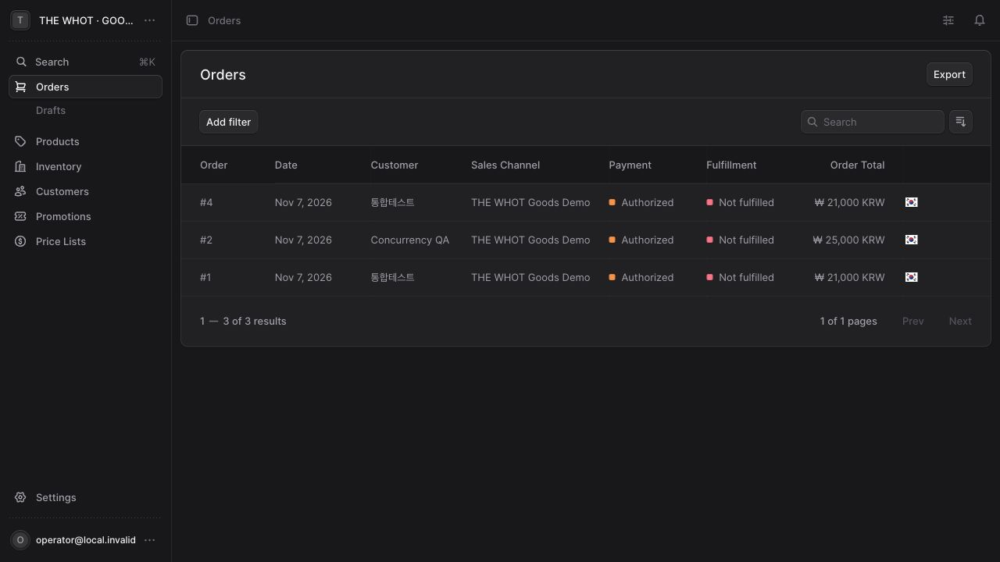

2026년 11월 7일 · 비주류 굿즈 로컬 시제품
| 회차 | 단위 시험 | 통합 시험 | 화면 검사 | 결과 |
|---|---|---|---|---|
| 1차 · Medusa 전환 | 11 | 26 | 69 | 통과 |
| 2차 · 독립 컨테이너 | 11 | 26 | 69 | 통과 |
| 3차 · 재시작·복구 | 11 | 26 | 69 | 통과 |
화면 검사는 23개 화면 × 390·768·1440px입니다. 가로 넘침·화면 오류·로드된 이미지 오류를 측정했습니다. 브랜드 본문 18개, 이미지 참조 201개, 내부 링크 28개를 검사했습니다. 주요 화면의 시각 확인을 병행했으며 이미지 내부 문구는 원본을 유지했습니다.
Medusa 상품·가격·재고·고객·시연 주문 API, 회원가입·로그인·로그아웃, 관리자 권한, 서버 금액 계산, 중복 요청 방지, 주문 저장·재조회, 관리자 상품 및 상태 수정이 동작합니다. 비밀번호 없는 관리자 입구는 제거했습니다.
동시 마지막 재고 요청은 한 건만 접수됐습니다. 프로세스 재시작 후 세션·주문·가격·재고가 유지됐으며, 별도 DB로 복구한 7개 핵심 테이블의 전체 행 체크섬이 일치했습니다. 새 Node 22.23.4 Docker 환경의 설치·빌드·DB 초기화·기동도 확인했습니다.
Medusa 기본 관리자의 HTTP 세션 문제는 loopback 주소에만 적용되는 로컬 설정으로 수정했습니다. 외부 HTTPS 배포에서는 보안 쿠키를 사용합니다.

실제 서버의 OS·자원·방화벽·DNS·TLS·reverse proxy는 아직 확인하지 않았습니다. 운영용 비밀값과 빈 DB를 사용하고 QA 계정·주문은 이관하지 않아야 합니다. 정확한 APP_ORIGIN/CORS와 보안 쿠키를 설정한 뒤 서버 현장에서 재확인해야 합니다.
이 Mac에는 Compose 플러그인이 없어 동일 Docker 이미지·네트워크·새 DB를 CLI로 검증했습니다. Compose 파일 자체의 서버 실행은 아직 확인하지 않았습니다.
Firebase·소셜로그인·실결제 PG·실제 배송/메일은 연결 대기입니다. 기본 관리자 화면의 Authorized 표시는 Medusa 시연용 system provider 상태이며 실제 금전 승인이 아닙니다. 현재 결과는 시연용 배포 준비 판정이며 실제 상용 판매 준비 완료를 의미하지 않습니다.
기존 브랜드 메인과 메뉴, 별도 BREWMASTER, 이미지 워드마크, 원본 사진을 유지했습니다. SHOP만 비주류 굿즈로 연결됩니다. 회사 연락처 링크는 ceo@thewhot.com입니다. 콘텐츠 기준은 기존 아임웹 수집 보관본이며 실시간 원본 사이트의 최신 내용과 완전히 같다고 단정하지 않습니다.